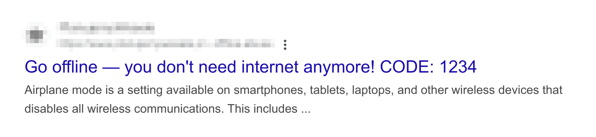

Offline surprise demo: a Chrome browser prefetching experiment
This is a short experiment in browser behavior, not a network hack or a real airplane mode bypass.
It shows how Chrome can prepare a page in advance — even when you think you're offline — thanks to clever use of web
technologies.
Important:
Use a recent version of the original Google Chrome (not on iOS)
Keep a stable internet connection until you are explicitly asked to disconnect.
Free up memory by closing unnecessary browser tabs and background apps.
Large resources are involved — low memory may cause the demo to fail.
You can also read a full explanation
here
— but doing so beforehand will spoil the experience!
iPad detected. This demo does not work on iPhone and iPad devices.
iPhone detected. This demo does not work on iPhone and iPad devices.
Chrome not detected. Please open this page in Google Chrome.
Seems you are offline. Please go online and refresh the page.
Instructions
The demo consists of 8 steps. For the best experience, please follow them carefully and don't
rush.
Close all incognito windows, if any.
If you are already in an incognito window, reopen this page in normal browsing mode.
Keep this normal window open.
You will need it for instructions while performing actions in a different window.
Press the button below to copy the search phrase. Then, open a new incognito window and paste
the copied phrase into Google. Do not use Bing, DuckDuckGo, or any other search engine.
Important: Do not click any search results yet!
You can also copy it from here:
Look for a matching search result.
It should look like this (the CODE will be different):

Without clicking the search result, type the 4-digit CODE you see into the input below:
Please wait...
This part prepares the experience. Keep the Google search results page open in your incognito window,
but don't perform any actions there yet.
Now disconnect from the internet.
You can enable airplane mode, disable Wi-Fi, or unplug the cable.
Waiting...
Now click the search result you found.
Pay attention — small details may surprise you.
If things look normal, close the incognito window and start again.